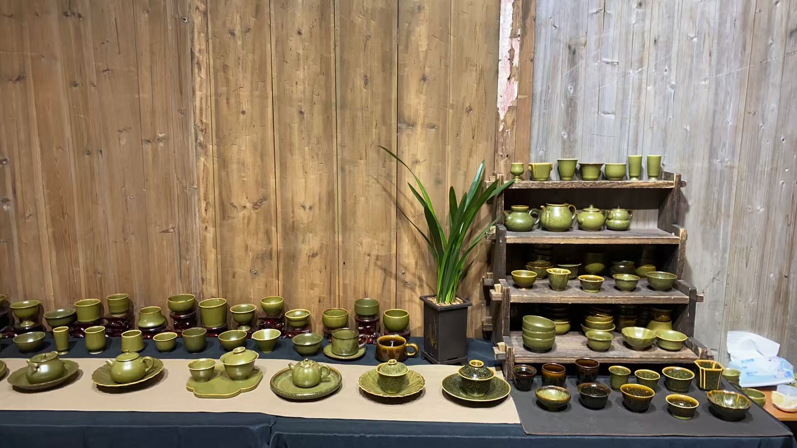

Individualized curation for collectors and luxury interiors.

How the process works
Initial conversation
We begin with the room, the collection, or the object sought—along with the materials, proportions, and visual qualities that matter most.
Sourcing and selection
A tailored search follows, with options selected from our network of artists and makers in Asia.
Review and decision
Pricing, condition, and timing are discussed once the right direction has emerged.
Delivery and placement
Packing, shipment, and arrival are coordinated with care and around your schedule. Each piece is inspected by us upon arrival in Canada to confirm that it has arrived in proper condition.